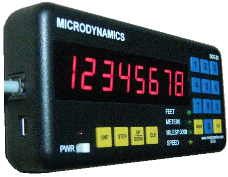

DOT-Z1 Standard Distance Measuring Instrument (without GPS)

Note: The DOT-Z1 Standard is non-GPS based instrument, as such it requires additional wiring to a VSS source.
DOT-Z1 Standard is a versatile vehicle mounted DMI (distance measuring instrument) offering the most complete set of operating features.
The most commonly used features are:
- Measures precise distance in feet, miles, and meters.
- Measures precise speed in mph, fps, and kph.
- User selectable signalling source, Vehicle Speed Sensor or other signal.
- Event/Data logging to log multiple fields just as a user-defined event numbers, speed, aerial and traversed distances, and GPS coordinates.
The simplicity of operations, reliability, and accuracy make it the singular solution to almost any application that relates to distance, time, and speed. The non-volatile memory and USB interface offers a new concept of real time integrated surveying. The USB interface appears exactly like a RS-232/COM port on a PC, even allowing legacy applications based on RS-232 to work with the instrument. Events and markers can be stored and later retrieved via menus or through USB.
The instrument utilizes new and improved algorithms for greater accuracy in measuring distance. A high performance microprocessor and solid-state circuitry make it reliable and impervious to interference and noise in a typical automotive environment. Unlike other DMIs, the DOT-Z1 does not need an external sensor to operate, making installation easier and lowering costs and maintenance.
Infinite expansion capabilities and utilities are offered via vast set of signals for peripheral equipment such as printers, laptop computers, paint marking systems, and remote controls. We offer customizations for suit almost any task or application for a nominal fee.
Features
- 8 Digit Large LED Display
- High Accuracy: 0.5 ft / mile, via a 4-digit calibration number (compared to 3-digit used by other DMIs)
- Small Size: 6.5 x 2.9 x 1.1 (inches)
- Sensor-less Design
- Auto Calibration
- Auto Distance Conversions
- Distance: Feet, Miles/10000, Meters
- Speed: MPH/KPH/FPS/FPM
- Distance Preset
- Auto Bidirectional Count
- Upgradeable Firmware using USB
- Storage - 40,000 Events
- USB Interface
- Programmable Distance Pulse Output*
- Remote Display Freeze*
- 2 Year Limited Warranty on DMI (6 month warranty on accessories and cables)
- Well-Documented and Examplified Operators Manual
- Many Optional Features and Versatility
Applications
- D.O.T.s, Public Works, Consultant/Contractors - Planning, RCI, Maintenance, Construction, Traffic Studies, Highway Inventory, Material Estimation and Sign Inventories
- Utility Companies - Cable and Pipe Length Requirements, Mapping and Related Inventory/Planning
- Police Departments - Accident and Speed Studies
- Movers, Carriers, Trucking, School Districts - Fuel Cost Estimation and Control, Route Mapping and Related Planning
- Forestry, Surveyors and Site Developers - Area, Inventory, Field Markings, Zoning
$539.00
Order